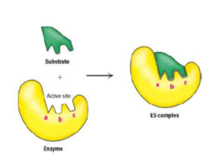
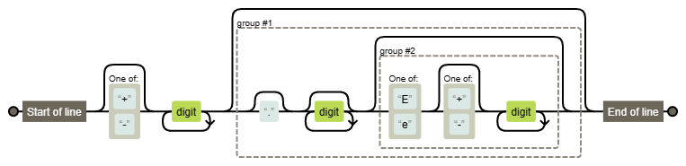
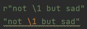

前言
正则表达式的教程在网上易得，而单开这么一篇，更多是为了督促自己不要轻易遗忘，也提供一个易于快速复习的地方。正则表达式就好像一种模板，只有与模板完全相符合的字符串才能被匹配。即便在初学时，也使用得到——比方说：检测程序设计课作业的输出是否正确？

char *strchr(const char *str, int c)
char *strrchr(const char *str, int c)
char *strstr(const char *haystack, const char *needle)
在学习C语言的时候，我们都曾经用过如上几个字符/字符串查找的函数，正则表达式也有类似的效果，不过它在应用范围上更为广阔。尽管阅读起来颇有难度，但一用便觉出它的方便了。举一个例子：
import re
"简单写一个可以匹配实数（支持科学计数法）的正则"
numPattern = r"^[+-]?\d+(\.?\d*([Ee][+-]?\d+)?)?$"
with open("in.txt", "r") as file1:
while (1):
line = file1.readline()
if (line):
num = re.search(numPattern, line)
if (num): print(num)
else:
break
#样例
12345
-88.1759
abcd5e5
-9.128E-100
#输出
<re.Match object; span=(0, 5), match='12345'>
<re.Match object; span=(0, 8), match='-88.1759'>
<re.Match object; span=(0, 11), match='-9.128E-100'>
Process finished with exit code 0
附：
- 正则表达式系列总结 - 知乎 (zhihu.com)
- 在线测试网站：正则表达式在线测试
- 正则调试网站：regex101: build, test, and debug regex
- 正则分析网站：Regexper （还采用上面的例子，效果如下图：）

正则表达式简单语法
注：正则表达式中/代表一种“额外匹配规则的”标记，而\类似于转义符。
位置
位置是一个空字符，它不匹配具有实体的任何一个字符（哪怕非打印），它更像一个锚点。
^：匹配起始位置：例如^apple可匹配”apple everyday”，不能匹配“an apple”$：匹配结束位置：例如apple$不能匹配”apple everyday”，可匹配“an apple”\b：匹配单词边界，例如\bapple不能匹配”pineapple”\B：匹配非单词边界，例如\Bapple能匹配”pineapple”exp1(?=exp2)：positive lookahead，查找 exp2 前面的 exp1exp1(?!exp2)：negative lookahead，查找后面不是 exp2 的 exp1(?<=exp2)exp1：positive lookbehind，查找 exp2 后面的 exp1(?<!exp2)exp1：negative lookbehind，查找前面不是 exp2 的 exp1
例：匹配非起始的某个位置：(?<!^)
注：positive lookahead中文名为：正向先行断言，而上述四个统称为零宽断言。但中文名太难记了，英文名很形象：往前看看？往后看看？
字符
[abc]：匹配方括号中所有字符[^abc]：匹配“除了方括号中字符”的所有字符[a-z]：匹配所有小写字母 (允许[a-c])[A-Z]：匹配所有小写字母[0-9]：匹配所有数字 (允许[0-5]).：匹配除换行符(\n, \r)之外的任何单个字符，等价于[^\n\r]\s：匹配所有空白符，等价于[\f\n\r\t\v](\S等价于[^\f\n\r\t\v])\w：匹配字母、数字、下划线。等价于[A-Za-z0-9_](\W等价于[^A-Za-z0-9_])\d：匹配数字，等价于[0-9](\D等价于[^0-9])
注1：连字符-在方括号中的使用按照Unicode排序。
注2：正则表达式的两种模糊匹配：
- 横向模糊：字符匹配的个数是不定的，具体见下面“限定符”
- 纵向模糊：匹配一个字符，但不是确定的某个。例如[abc]能够跟abc当中的任一个匹配。我之前记错成可匹配多次，总多此一举写成[abc]{1}。
限定符
贪婪
?：匹配它前面的字符0次或1次，等价于{0,1}。如”aaaaabc”正则a?，得到”a”*：匹配它前面的字符0次或多次，等价于{0,}。如”aaaaabc”正则a?，得到”aaaaa”+：匹配它前面的字符1次或多次，等价于{1,}。如”aaaaabc”正则a?，得到”aaaaa”{n}：n 是一个非负整数，匹配确定的 n 次{n,}：n 是一个非负整数，匹配至少 n 次{n,m}：m 和 n 均为非负整数(n<=m)。匹配至少 n 次、至多 m 次
懒惰
??：匹配它前面的字符0次或1次，但尽可能少。如”aaaaabc”正则a?，得到空*?：匹配它前面的字符0次或多次，但尽可能少。如”aaaaabc”正则a?，得到空+?：匹配它前面的字符1次或多次，但尽可能少。如”aaaaabc”正则a?，得到”a”{n,}?：n 是一个非负整数，匹配至少 n 次，但尽可能少{n,m}?：m 和 n 均为非负整数(n<=m)。匹配至少 n 次、至多 m 次，但尽可能少
选择
()：标记一个子表达式的开始和结束位置，表示捕获分组，() 会把每个子匹配里的值存储到一个临时缓冲区中，按照在正则表达式模式中从左到右出现的顺序。
- 可以使用 \n(向后引用) 访问，其中 n 为一个标识特定缓冲区的一位或两位十进制数。
- 可以使用非捕获元字符 ?:、?= 或 ?! 来重写捕获，忽略对相关匹配的保存。
(exp)匹配exp，并捕获文本到自动命名的组里(?<name>exp)：匹配exp，并捕获文本到名称为name的组里(?:exp)：匹配exp，不捕获匹配的文本，也不给此分组分配组号|：指明两项之间的一个选择 （懒惰，前面的匹配到后不再匹配后面的分支）
例如：/\b([a-z]+) \1\b可匹配重复单词，如”I am happy happy”，其中\b代表单词边界，()为一个子匹配项，\1为第一个子匹配项。
修饰符
位于正则表达式外，代表一种“额外匹配规则的”标记。
/pattern/flags #例如/[a-z]+/igm, igm为修饰符
- i：ignore - 不区分大小写
- g： global - 全局匹配，即查找所有的匹配项
- m：multi line - 多行匹配，即使边界字符 ^ 和 $ 匹配每一行的开头和结尾，记住是多行，而不是整个字符串的开头和结尾
- s：特殊字符圆点 . 中包含换行符 \n
运算符优先级
| 运算符 | 描述 |
|---|---|
| \ | 转义符 |
| (), (?:), (?=), [] | 圆括号和方括号 |
| *, +, ?, {n}, {n,}, {n,m} | 限定符 |
| ^, $, \任何元字符、任何字符 | 位置和顺序 |
| | | 或 |
Python正则表达式
为什么Pattern前面有个r呢？
先说点题外话。可能第一次看到python正则的时候不知道Pattern字符串前面的r是哪里来的，随手写的几个例子也看不出有什么差别（然后我就栽进了这个坑），以前言中识别实数的正则为例：
numPattern = r"^[+-]?\d+(\.?\d*([Ee][+-]?\d+)?)?$"
事实上，这个r保证了字符串不会被python转义。上述例子加不加都一样，那是因为没什么可以被转义的东西，而下例中就体现出差别了：
import re
Pattern = r"^(happy)"
with open("in2.txt", "r") as file1:
while (1):
line = file1.readline()
if (line):
num = re.sub(Pattern, "not \1 but sad", line) //!
if (num): print(num)
else: break
#输入
happy dog
#输出
not but sad dog
/1理应是一次向后引用——我们期望得到一只伤心的小狗，然而happy却被吞掉了。事实上，这里输出了\o01，是非打印字符SOH，因为\1本身可以看作字符串里的一个八进制转义字符。我们当然不能让它这么做。于是加上r，让本该转移的字符不再转义。修正如下：
num = re.sub(Pattern, r"not \1 but sad", line)
此时输出了一只伤心的小狗：
not happy but sad dog
当然，编辑器的高亮也可能暗示其中的玄机：

.strip()与.replace() ?
python写代码时常用.replace("\r",").replace("\n",")删除输入字符串中的换行符，这就相当于单字符查找，而与此相比，.strip()用的较少。它可以用来删除字符串首尾的指定字符，但是使用时可能会产生误解。例如：
"0202220happy".strip("02")
直观上看，下面几种都可能是输出：
"02220happy""220happy""happy"
事实上它的输出是"happy"，也就是说strip()删除的是指定的字符，而非字符序列。这与正则表达式中的$[02]是等价的，而非$02。
下面的内容主要是python标准库里的，参考：Python 正则表达式 | 菜鸟教程 (runoob.com)
参数说明
- pattern : 一个字符串形式的正则表达式
- flags : 可选，表示匹配模式，比如忽略大小写，多行模式等，具体参数为：
- re.I 忽略大小写
- re.L 表示特殊字符集 \w, \W, \b, \B, \s, \S 依赖于当前环境
- re.M 多行模式
- re.S 即为 . 并且包括换行符在内的任意字符（**.** 不包括换行符）
- re.U 表示特殊字符集 \w, \W, \b, \B, \d, \D, \s, \S 依赖于 Unicode 字符属性数据库
- re.X 为了增加可读性，忽略空格和 # 后面的注释
注：多个标志可以通过按位 OR(|) 它们来指定。如 re.I | re.M 被设置成 I 和 M 标志。其实就是/Pattern/img里面的修饰符。
正则表达式对象
re.RegexObject
re.compile() 返回 RegexObject 对象。
re.MatchObject
group() 返回被 RE 匹配的字符串。
- start() 返回匹配开始的位置
- end() 返回匹配结束的位置
- span() 返回一个元组包含匹配 (开始,结束) 的位置
| 匹配对象方法 | 描述 |
|---|---|
| group(num=0) | 匹配的整个表达式的字符串，group() 可以一次输入多个组号，在这种情况下它将返回一个包含那些组所对应值的元组。 |
| groups() | 返回一个包含所有小组字符串的元组，从 1 到 所含的小组号。 |
group([group1, …])方法用于获得一个或多个分组匹配的字符串，当要获得整个匹配的子串时，可直接使用group()或group(0)；start([group])方法用于获取分组匹配的子串在整个字符串中的起始位置（子串第一个字符的索引），参数默认值为 0；end([group])方法用于获取分组匹配的子串在整个字符串中的结束位置（子串最后一个字符的索引+1），参数默认值为 0；span([group])方法返回(start(group), end(group))。
两个例子以帮助理解：
#!/usr/bin/python
import re
line = "Cats are smarter than dogs"
matchObj = re.match( r'(.*) are (.*?) .*', line, re.M|re.I)
if matchObj:
print "matchObj.group() : ", matchObj.group()
print "matchObj.group(1) : ", matchObj.group(1)
print "matchObj.group(2) : ", matchObj.group(2)
else:
print "No match!!"
#输出
matchObj.group() : Cats are smarter than dogs
matchObj.group(1) : Cats
matchObj.group(2) : smarter
>>>import re
>>> pattern = re.compile(r'\d+') # 用于匹配至少一个数字
>>> m = pattern.match('one12twothree34four') # 查找头部，没有匹配
>>> print m
None
>>> m = pattern.match('one12twothree34four', 2, 10) # 从'e'的位置开始匹配，没有匹配
>>> print m
None
>>> m = pattern.match('one12twothree34four', 3, 10) # 从'1'的位置开始匹配，正好匹配
>>> print m # 返回一个 Match 对象
<_sre.SRE_Match object at 0x10a42aac0>
>>> m.group(0) # 可省略 0
'12'
>>> m.start(0) # 可省略 0
3
>>> m.end(0) # 可省略 0
5
>>> m.span(0) # 可省略 0
(3, 5)
常用函数
re.compile
其用于编译正则表达式，生成一个正则表达式（ Pattern ）对象，供 match() 和 search() 这两个函数使用。
re.compile(pattern[, flags])
re.match
re.match(pattern, string, flags=0)
它尝试从字符串的起始位置匹配一个模式，如果不是起始位置匹配成功的话，match() 就返回 none。我们可以使用 group(num) 或 groups() 匹配对象函数来获取匹配表达式。
re.search
re.search(pattern, string, flags=0)
re.search 扫描整个字符串并返回第一个成功的匹配。我们可以使用 group(num) 或 groups() 匹配对象函数来获取匹配表达式。
re.findall
在字符串中找到正则表达式所匹配的所有子串，并返回一个列表，如果有多个匹配模式，则返回元组列表，如果没有找到匹配的，则返回空列表。
注意： match 和 search 是匹配一次 findall 匹配所有。
语法格式为：
findall(string[, pos[, endpos]])
参数：
- string : 待匹配的字符串。
- pos : 可选参数，指定字符串的起始位置，默认为 0。
- endpos : 可选参数，指定字符串的结束位置，默认为字符串的长度。
re.finditer
和 findall 类似，在字符串中找到正则表达式所匹配的所有子串，并把它们作为一个迭代器返回。
re.finditer(pattern, string, flags=0)
re.sub
它可以替换字符串中的匹配项。
re.sub(pattern, repl, string, count=0, flags=0)
参数：
- repl : 替换为的字符串，也可为一个函数。
- string : 要被查找替换的原始字符串。
- count : 模式匹配后替换的最大次数，默认 0 表示替换所有的匹配。
import re
Pattern = r"(\d+)-(\d+)-(\d+)"
def func(num1, num2, num3):
return num3+"-"+num1+"-"+num2
with open("in2.txt", "r") as file1:
while (1):
line = file1.readline()
if (line):
num = re.sub(Pattern, func(r"\1",r"\2",r"\3"), line)
if (num): print(num)
else: break
#输入
1234-233-573512
#输出
573512-1234-233
update log
- 2021-7-18：完成正则表达式语法整理
- 2021-11-9：更新
- 2022-2-19：增加前言、插图和部分例子
- 2022-5-2：更正python的一部分内容